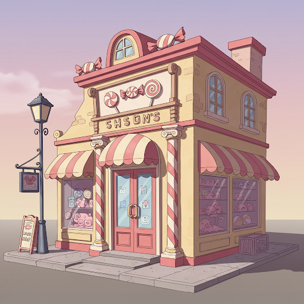

Blogs and small business websites and applications are a genre of website geared
towards entrepreneurs and local businesses. They require a beautiful front-end to attract and retain visitors,
and often require a back-end, either for user profiles, scheduling appointments, or building chatrooms and forums,
to list a few. Most e-commerce websites fit into this category as well, and often require a more robust back-end,
owing to the volume of data that passes from the user to the server and back.
These websites and applications are built with a variety of platforms and coding
techniques, including Wordpress, Drupal, and the MERN stack; or by using server-side technologies, such as PHP.
For the more conscientious-minded amongst us, these sites can now be built 'green' as well, using techniques
and technologies that reflect advancements in the field of 'green' techonologies in the area of professional
web development.